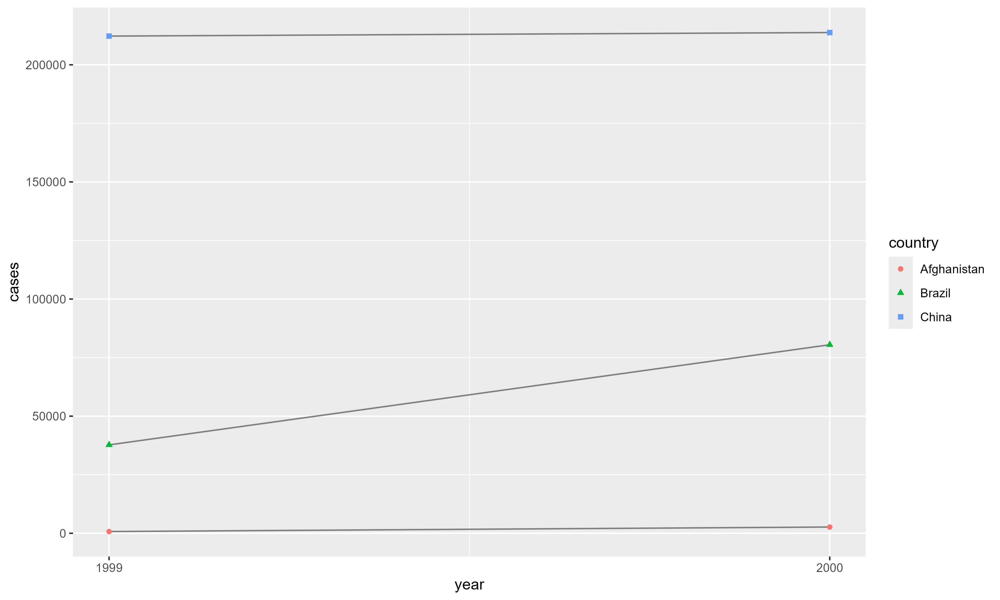

Introducción a la Programación con R - Tidyverse
Sesión 4: Organización de Datos
Introducción
¿Por qué ordenar datos?
- La mayoría de los datos reales están desordenados
- Organizar datos toma tiempo al inicio
- Pero ahorra mucho más tiempo después
- Con datos ordenados, el análisis es más fácil
- Las herramientas del tidyverse funcionan mejor con datos ordenados
Cargar paquetes
El paquete tidyr (parte de tidyverse) proporciona herramientas para ordenar datos.
¿Qué son datos tidy?
Los mismos datos, 3 formas diferentes
Tabla 1:
Los mismos datos, 3 formas diferentes
Tabla 2:
# A tibble: 12 × 4
country year type count
<chr> <dbl> <chr> <dbl>
1 Afghanistan 1999 cases 745
2 Afghanistan 1999 population 19987071
3 Afghanistan 2000 cases 2666
4 Afghanistan 2000 population 20595360
5 Brazil 1999 cases 37737
6 Brazil 1999 population 172006362
7 Brazil 2000 cases 80488
8 Brazil 2000 population 174504898
9 China 1999 cases 212258
10 China 1999 population 1272915272
11 China 2000 cases 213766
12 China 2000 population 1280428583Los mismos datos, 3 formas diferentes
Tabla 3:
# A tibble: 6 × 3
country year rate
<chr> <dbl> <chr>
1 Afghanistan 1999 745/19987071
2 Afghanistan 2000 2666/20595360
3 Brazil 1999 37737/172006362
4 Brazil 2000 80488/174504898
5 China 1999 212258/1272915272
6 China 2000 213766/1280428583¿Cuál es más fácil de usar?
Los tres principios de datos tidy
- Cada variable es una columna
- Cada observación es una fila
- Cada valor es una celda
Los tres principios de datos tidy

- Variables → Columnas
- Observaciones → Filas
- Valores → Celdas
¿Por qué usar datos tidy?
- Consistencia: Una forma estándar de almacenar datos
- Fácil aprender herramientas que funcionan con esta estructura
- Todas tienen uniformidad subyacente
- Naturaleza vectorizada de R:
- Variables en columnas permiten que R brille
- Funciones de R trabajan con vectores de valores
- Transformar datos tidy es natural
Ejemplo: Trabajar con datos tidy
# A tibble: 6 × 5
country year cases population rate
<chr> <dbl> <dbl> <dbl> <dbl>
1 Afghanistan 1999 745 19987071 0.373
2 Afghanistan 2000 2666 20595360 1.29
3 Brazil 1999 37737 172006362 2.19
4 Brazil 2000 80488 174504898 4.61
5 China 1999 212258 1272915272 1.67
6 China 2000 213766 1280428583 1.67 Visualizar datos tidy

Tip
Con datos tidy, crear visualizaciones es directo y simple
Formato largo | pivot_longer()
Problema común: Datos en nombres de columnas
La mayoría de datos reales están desordenados por dos razones:
- Los datos se organizan para facilitar entrada, no análisis
- La mayoría de personas no conocen principios de datos tidy
Solución: pivot_longer() y pivot_wider()
Ejemplo: Billboard
# A tibble: 317 × 79
artist track date.entered wk1 wk2 wk3 wk4 wk5 wk6 wk7 wk8
<chr> <chr> <date> <dbl> <dbl> <dbl> <dbl> <dbl> <dbl> <dbl> <dbl>
1 2 Pac Baby… 2000-02-26 87 82 72 77 87 94 99 NA
2 2Ge+her The … 2000-09-02 91 87 92 NA NA NA NA NA
3 3 Doors D… Kryp… 2000-04-08 81 70 68 67 66 57 54 53
4 3 Doors D… Loser 2000-10-21 76 76 72 69 67 65 55 59
5 504 Boyz Wobb… 2000-04-15 57 34 25 17 17 31 36 49
6 98^0 Give… 2000-08-19 51 39 34 26 26 19 2 2
7 A*Teens Danc… 2000-07-08 97 97 96 95 100 NA NA NA
8 Aaliyah I Do… 2000-01-29 84 62 51 41 38 35 35 38
9 Aaliyah Try … 2000-03-18 59 53 38 28 21 18 16 14
10 Adams, Yo… Open… 2000-08-26 76 76 74 69 68 67 61 58
# ℹ 307 more rows
# ℹ 68 more variables: wk9 <dbl>, wk10 <dbl>, wk11 <dbl>, wk12 <dbl>,
# wk13 <dbl>, wk14 <dbl>, wk15 <dbl>, wk16 <dbl>, wk17 <dbl>, wk18 <dbl>,
# wk19 <dbl>, wk20 <dbl>, wk21 <dbl>, wk22 <dbl>, wk23 <dbl>, wk24 <dbl>,
# wk25 <dbl>, wk26 <dbl>, wk27 <dbl>, wk28 <dbl>, wk29 <dbl>, wk30 <dbl>,
# wk31 <dbl>, wk32 <dbl>, wk33 <dbl>, wk34 <dbl>, wk35 <dbl>, wk36 <dbl>,
# wk37 <dbl>, wk38 <dbl>, wk39 <dbl>, wk40 <dbl>, wk41 <dbl>, wk42 <dbl>, …Problema con billboard
- Cada observación es una canción
artist,track,date.enteredson variables- Pero
wk1,wk2, …wk76también son columnas - Los nombres de columnas son valores de una variable (
week) - Los valores de las celdas son otra variable (
rank)
Solución: pivot_longer()
indicadores_inei <- tribble(
~indicador, ~amazonas, ~ancash, ~cusco,
"poblacion_total", 426806, 1180638, 1423807,
"poblacion_urbana_pct", 41.5, 63.4, 60.7,
"poblacion_rural_pct", 58.5, 36.6, 39.3
)
indicadores_inei# A tibble: 3 × 4
indicador amazonas ancash cusco
<chr> <dbl> <dbl> <dbl>
1 poblacion_total 426806 1180638 1423807
2 poblacion_urbana_pct 41.5 63.4 60.7
3 poblacion_rural_pct 58.5 36.6 39.3Argumentos de pivot_longer()
indicadores_inei |>
pivot_longer(
cols = amazonas:ancash, # Qué columnas pivotar
names_to = "departamento", # Nombre de nueva columna (nombres)
values_to = "valores" # Nombre de nueva columna (valores)
)# A tibble: 400 × 4
tipo indicadores_demograficos departamento valores
<chr> <chr> <chr> <dbl>
1 Fecundidad Nacimientos anuales: B amazonas 8653
2 Fecundidad Nacimientos anuales: B apurimac 7423
3 Fecundidad Nacimientos anuales: B arequipa 23965
4 Fecundidad Nacimientos anuales: B ayacucho 12152
5 Fecundidad Nacimientos anuales: B cajamarca 25235
6 Fecundidad Nacimientos anuales: B cusco 23873
7 Fecundidad Nacimientos anuales: B huancavelica 6257
8 Fecundidad Nacimientos anuales: B huanuco 13755
9 Fecundidad Nacimientos anuales: B ica 19790
10 Fecundidad Nacimientos anuales: B junin 23641
# ℹ 390 more rowscols: qué columnas pivotar (sintaxis deselect())names_to: nombre para la nueva variable de nombres de columnasvalues_to: nombre para la nueva variable de valores
¿Cómo funciona pivot_longer()?
Ejemplo simple:
Mecánica de pivot_longer()

- Columnas existentes se repiten (una vez por columna pivotada)
- Nombres de columnas se convierten en valores
- Valores de celdas se desenrollan fila por fila
pivot_wider() | Formato Ancho
Cuando necesitas pivot_wider()
- Opuesto a
pivot_longer() - Aumenta columnas, reduce filas
- Útil cuando una observación está dispersa en múltiples filas
- Menos común en la práctica
Ejemplo: Experiencia de pacientes
# A tibble: 60 × 3
year continent pop_promedio
<int> <fct> <dbl>
1 1952 Africa 4570010.
2 1952 Americas 13806098.
3 1952 Asia 42283556.
4 1952 Europe 13937362.
5 1952 Oceania 5343003
6 1957 Africa 5093033.
7 1957 Americas 15478157.
8 1957 Asia 47356988.
9 1957 Europe 14596345.
10 1957 Oceania 5970988
# ℹ 50 more rowsSolución: pivot_wider()
gapminder |>
group_by(year, continent) |>
summarise(pop_promedio = mean(pop),
.groups = "drop") |>
pivot_wider(names_from = year,
values_from = pop_promedio)# A tibble: 5 × 13
continent `1952` `1957` `1962` `1967` `1972` `1977` `1982` `1987` `1992`
<fct> <dbl> <dbl> <dbl> <dbl> <dbl> <dbl> <dbl> <dbl> <dbl>
1 Africa 4570010. 5093033. 5.70e6 6.45e6 7.31e6 8.33e6 9.60e6 1.11e7 1.27e7
2 Americas 13806098. 15478157. 1.73e7 1.92e7 2.12e7 2.31e7 2.52e7 2.73e7 2.96e7
3 Asia 42283556. 47356988. 5.14e7 5.77e7 6.52e7 7.23e7 7.91e7 8.70e7 9.49e7
4 Europe 13937362. 14596345. 1.53e7 1.60e7 1.67e7 1.72e7 1.77e7 1.81e7 1.86e7
5 Oceania 5343003 5970988 6.64e6 7.30e6 8.05e6 8.62e6 9.20e6 9.79e6 1.05e7
# ℹ 3 more variables: `1997` <dbl>, `2002` <dbl>, `2007` <dbl>names_from: columna existente que contiene los nombresvalues_from: columna existente que contiene los valores
¿Cómo funciona pivot_wider()?
Ejemplo simple:
Aplicar pivot_wider()
# A tibble: 2 × 4
id bp1 bp2 bp3
<chr> <dbl> <dbl> <dbl>
1 A 100 120 105
2 B 140 115 NANote
NAs se crean cuando no hay valor correspondiente en la entrada
Mecánica de pivot_wider()
pivot_wider() sigue estos pasos:
- Identifica qué irá en columnas (valores únicos de
names_from) - Identifica qué irá en filas (variables no usadas =
id_cols) - Crea data frame vacío combinando filas × columnas
- Rellena celdas con valores de
values_from
Valores duplicados
¿Qué pasa si hay múltiples filas para la misma combinación?
Resultado con duplicados
# A tibble: 2 × 3
id bp1 bp2
<chr> <list> <list>
1 A <dbl [2]> <dbl [1]>
2 B <dbl [1]> <dbl [1]>Warning
Crea list-columns! Necesitas resolver duplicados primero
Encontrar duplicados
# A tibble: 1 × 3
id measurement n
<chr> <chr> <int>
1 A bp1 2Tip
Investiga y resuelve el problema antes de pivotar
Ejemplo Práctico: Planes Urbanos
Datos de ejemplo
Rows: 113
Columns: 7
$ ubigeo <dbl> 2006, 2006, 2001, 1506, 2001, 1401, 2001, 2008, 2004, 200…
$ departamento <chr> "PIURA", "PIURA", "PIURA", "LIMA", "PIURA", "LAMBAYEQUE",…
$ provincia <chr> "SULLANA", "SULLANA", "PIURA", "HUARAL", "PIURA", "CHICLA…
$ ambito <chr> "SULLANA", "Sullana", "Tambo Grande", "Chancay", "Cura Mo…
$ tipo_de_plan <chr> "PAT", "PDU", "PDU", "PAT", "PDU", "PDU", "PDU", "PDU", "…
$ estado <chr> "Aprobado", "Aprobado", "Aprobado", "Terminado", "Aprobad…
$ o_m <lgl> NA, NA, NA, NA, NA, NA, NA, NA, NA, NA, NA, NA, NA, NA, N…Alargar: Múltiples columnas de conteo
Supongamos que tenemos:
Solución
planes_long <- planes_wide |>
pivot_longer(
cols = starts_with("planes_"),
names_to = "anio",
names_prefix = "planes_",
values_to = "n_planes"
)
planes_long# A tibble: 6 × 3
departamento anio n_planes
<chr> <chr> <dbl>
1 CUSCO 2024 12
2 CUSCO 2025 14
3 LIMA 2024 20
4 LIMA 2025 23
5 AREQUIPA 2024 10
6 AREQUIPA 2025 11Ensanchar: De largo a ancho
Resumen
Conceptos clave
- Datos tidy: variables en columnas, observaciones en filas, valores en celdas
- pivot_longer(): convertir columnas en filas (alargar)
- pivot_wider(): convertir filas en columnas (ensanchar)
- No hay “una” forma correcta - depende del análisis
- Está bien des-ordenar, transformar, y re-ordenar según necesites
Funciones principales
| Función | Uso |
|---|---|
pivot_longer() |
Alargar datos (columnas → filas) |
pivot_wider() |
Ensanchar datos (filas → columnas) |
names_to |
Nombre para nueva columna de nombres |
values_to |
Nombre para nueva columna de valores |
names_from |
De dónde tomar nombres de columnas |
values_from |
De dónde tomar valores |
names_sep |
Separador para dividir nombres |
.value |
Indicador especial para nombres variables |
Argumentos importantes
pivot_longer():
cols- qué columnas pivotarnames_to- nombre de nueva variablevalues_to- nombre de valoresvalues_drop_na- eliminar NAsnames_sep/names_pattern- dividir nombresnames_prefix- remover prefijo
pivot_wider():
names_from- columna con nombresvalues_from- columna con valoresid_cols- columnas que identifican filasnames_prefix- agregar prefijovalues_fill- valor para celdas faltantes
Consejos finales
- Empieza simple - usa ejemplos pequeños para entender
- Visualiza - dibuja cómo quieres que se vean los datos
- Itera - prueba, revisa, ajusta
- Documenta - comenta por qué pivoteas de cierta forma
- Sé pragmático - la forma “correcta” es la que facilita tu análisis
- No tengas miedo - des-ordenar y re-ordenar es normal
Errores comunes
| Error | Solución |
|---|---|
Olvidas especificar names_to o values_to |
Ambos son requeridos en pivot_longer() |
Múltiples filas por ID en pivot_wider() |
Especifica id_cols correctamente |
| List-columns inesperadas | Tienes duplicados - usa group_by() + summarize() |
| NAs no deseados | Usa values_drop_na = TRUE |
| Tipos incorrectos después de pivotar | Usa mutate() para corregir tipos |
Recursos adicionales
Contacto
Paul Efren Santos Andrade
📧 [Correo electrónico]

Paul Efren Santos Andrade // Introducción a R - Tidyverse